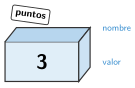

Variables y tipos de datos
🤔 Pienso5 min
Qué hago aquí: Piensa un momento y contesta con lo que ya sabes. No pasa nada si no lo sabes: es para empezar.
Escribe tres datos que recuerda el marcador de un partido de baloncesto. ¿Cuáles cambian durante el partido?
📖 Leo y aprendo15 min
Qué hago aquí: Lee despacio, mira los dibujos y los ejemplos, y quédate con la idea clave del final.
Los programas necesitan recordar datos: los puntos , un nombre , las vidas … Para eso usan variables.

Con una variable haces tres cosas:
- Crearla con un valor:
var puntos = 0; - Leerla: usar su valor, por ejemplo para mostrarlo.
- Cambiarla:
puntos = puntos + 1;suma 1 a lo que tenía.
✏️ Hago25 min
Qué hago aquí: Haz las actividades en orden. Empieza siempre por las básicas.
Une cada valor con su tipo de dato.
12 • | • Texto |
"hola" • | • Booleano |
true • | • Número |
Dibuja la caja de una variable llamada vidas que vale 5.
x vale 4. Después se hace x = x + 3. ¿Cuánto vale x?
Programa el contador de clics en App Lab. Añade un botón que lo ponga a 0.
¿Cuáles de estos nombres son correctos? Corrige los otros: puntos, 2jugador, número vidas, tiempoRestante.
✏️ Puedes responder escribiendo, con un dibujo o un esquema, o contándolo en voz alta.
🚀 Amplío (si quieres saber más)
Qué hago aquí: ¿Has terminado? Lee la curiosidad o elige el reto. Es voluntario.
Haz el contador del polideportivo: un botón «Entra», otro «Sale» y una etiqueta con las personas que hay dentro. ¿Qué pasa si pulsas «Sale» y no hay nadie?
✅ Compruebo5 min
Qué hago aquí: Contesta sin mirar la ficha y marca cómo lo llevas.